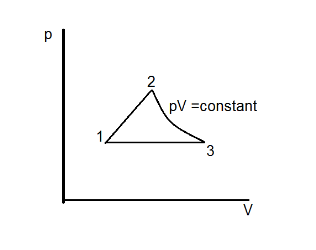

P24 USFO
This is problem 24-27 in the USFO test.

Three points define a certain PV curve.
| Point | Pressure (bars) | Pressure (Pa) | Volume (\(\text{m}^3\)) |
|---|---|---|---|
| 1 | 1 | \(10^5\) | 1 |
| 2 | 2 | \(2 \times 10^5\) | 2 |
| 3 | 1 | \(10^5\) | 4 |
Between Point 2 and Point 3, \(PV=\text{constant}\).
The cycle is performed on 2 kg of air.
Work performed from P1 to P2
Work from Point 1 to Point 2:
\[
\begin{align}
W_{12} & = \frac{P_1 + P_2}{2}(V_2 - V_1) \\\\
& = \frac{100\text{ kPa} + 200\text{ kPa}}{2} \times (2 - 1)\text{ m}^3 \\\\
& = 150\text{ kJ}
\end{align}
\]
Work from Point 2 to Point 3:
\[
\begin{align}
W_{23} & = P_2 V_2 \ln\left(\frac{V_3}{V_2}\right) \\\\
& = 400\text{ kPa}\cdot\text{m}^3 \times \ln(2) \\\\
& \approx 277.26\text{ kJ}
\end{align}
\]
Work from Point 3 to Point 1:
\[
\begin{align}
W_{31} & = P_3 (V_1 - V_3) \\\\
& = 100\text{ kPa} \times (1 - 4)\text{ m}^3 \\\\
& = -300\text{ kJ}
\end{align}
\]
Work per cycle:
\[
\begin{align}
W_{\text{net}} & = 150.00\text{ kJ} + 277.26\text{ kJ} - 300.00\text{ kJ} \\\\
& = \mathbf{127.26\text{ kJ}}
\end{align}
\]